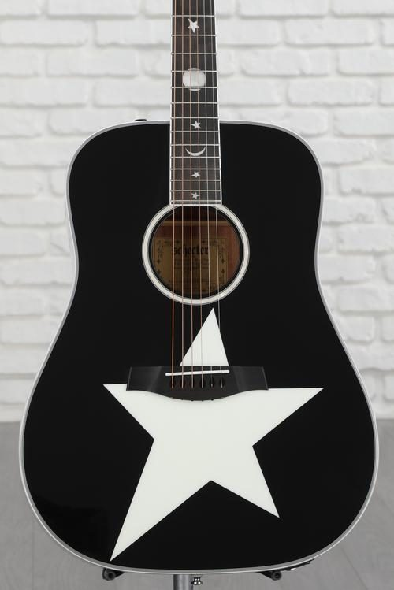

Robert Smith est peut-être le guitariste rock le plus sous-estimé de tous les temps. Bien qu'il n'ait jamais été du genre à déchiqueter avec le même flash que certains de ses contemporains des années 80,
son influence sur des foules de joueurs et de sous-genres devrait lui valoir une place plus vénérée dans le panthéon des dieux de la guitare.
À continuation quelques uns des équipements utilisés par Robert Smith, qui ont donné à son groupe ce son unique dans les annales de l'histoire du Rock
Fender Pawn Shop Bass VI
Jazzmaster
Schecter Ultra Cure 40th Anniversary
Schecter RS-1000 Stage Acoustic

Boss CH-1 Chorus
Boss DD-3T Digital Delay
L'une des premières "Live Gigs" enregistrées de The Cure